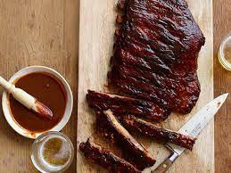

Kansas City Style Ribs
home

It's All About Kansas City Style Ribs
Kansas City Style Ribs are typically characterized by the thick, sticky sauce brushed on in the last 30 minutes of cooking. The dry rub and sauce are on the sweet side using a brown sugar base, but are balanced with chili powder and pepper, producing some truly finger licking good ribs.
Ingredients:
- 2 slabs pork spare ribs 3 pounds each
- Barbeque Sauce
Dry Rub:
- 2 cups brown sugar
- 1/2 cup dry mustard
- 1 tblsp cayenne pepper
- 1 tblsp smoked paprika
- 1 tblsp garlic powder
- 1 tblsp onion powder
- 1 tblsp salt
- 2 tsp ground black pepper
Directions
- Remove the thin white membrane off of the bone-side of the ribs. Mix together the brown sugar, dry mustard, cayenne, paprika, garlic powder, onion powder, salt and pepper in a small bowl. Massage the rub into the ribs and let sit for 1 hour or up to overnight.
- If cooking on the grill, place the ribs meat-side down next to medium-hot coals that are about 225 degrees F. The indirect heat will cook them slower, making them tender. Allow to cook for 1 hour. Turn ribs every half hour and baste with the Kansas City Barbeque Sauce. Cook until the ribs are tender, about 3 to 4 hours.
- If cooking indoors, place in a roasting pan with a rack. Slather the ribs with the Kansas City Barbeque Sauce and tent a piece of aluminum foil over them. In a preheated 350 degrees F. oven, place the ribs, basting with the sauce every 30 minutes and removing the foil for the last 30 minutes and cooking until fork tender, about 2 1/2 to 3 hours.